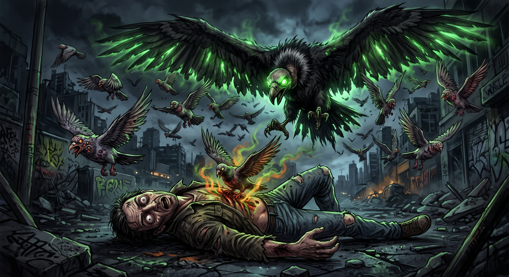

Quando ademar tentava mover lentamente após ser mordido pelo morcego, radioativo mesmo com a vida se esvaindo de seu corpo ele lutando por sua vida e,
fugindo da morte de forma meio que milagrosa, foi atacado por um urubu radioativo que o fez paralisar os nervos,
saltando seus olhos para fora, suas entranhas começaram a ferver por, dentro e foi ai que ademar notou que não tinha mais chances de sobreviver.
